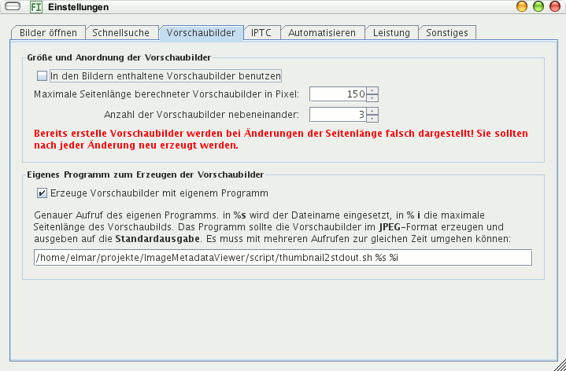

Kreuzen Sie hier an, werden die Thumbnails geladen, die in den Bildern eingebettet sind. Das geht schneller, als die Thumbnails zu berechnen, aber manchmal sind die eingebetteten Thumbnails von geringer Qualität.
Wollen Sie keine eingebetteten Thumbnails benutzen, werden diese so groß berechnet, wie Sie hier angeben. Für RAW-Dateien werden unabhängig von dieser Einstellung immer die eingebetteten Thumbnails benutzt!
Im Fenster werden so viele Thumbnails nebeneinander platziert, wie Sie hier einstellen.
Sie können einstellen, wieviel Rechenleistung das Programm für das Erzeugen der Thumbnails benutzt. Wollen Sie noch mit anderen Programmen arbeiten, ist die Einstellung Mittel in der Regel geeignet. Sollte der Rechner langsamer reagieren als gewohnt, wählen Sie Niedrig. Das Erzeugen der Thumbnails dauert dann länger. Die Einstellung Hoch ist nur geeignet, wenn Sie nicht mehr am Rechner arbeiten müssen, erzeugt die Thumbnails aber am schnellsten.
Die Thumbnails werden erzeugt mit Imagero. Sie können diese mit einem beliebigen anderen Programm erzeugen lassen, sofern dies JPEGs an die Standardausgabe liefern kann. Ein anderes Programm ist sinnvoll, wenn: